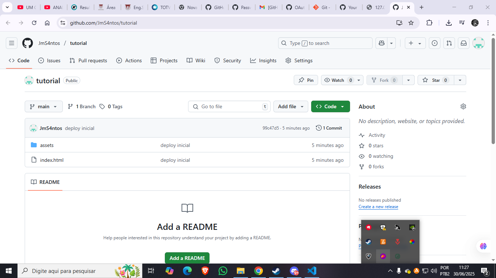

📁 Passo 1: Estruture seu projeto
Crie seus arquivos HTML, CSS e JS. Organize em pastas como /assets/css, /assets/js e /assets/img.
🔧 Passo 2: Suba para o GitHub
- Crie um repositório no GitHub.
- Use os comandos Git para subir o projeto:
git init git add . git commit -m "Deploy inicial" (Sempre importante dar uma boa descrição do que você está adicionando) git branch -M main git remote add origin https://github.com/seu-usuario/seu-repo.git (Lembre-se de trocar pela URL do seu repositório) git push -u origin main
🌐 Passo 3: Ative o GitHub Pages
Vá em Settings > Pages no seu repositório.
Selecione a branch main e o diretório /root.
Após salvar, seu site estará disponível em:
https://seu-usuario.github.io/seu-repo (Lembre-se de trocar pela URL do seu repositório/site)
💡 Exemplo: Sua Tela no GitHub ficará assim com seu projeto
Após o Deploy seu GitHub ficará assim:
